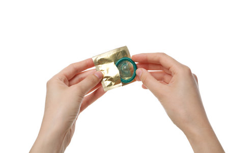
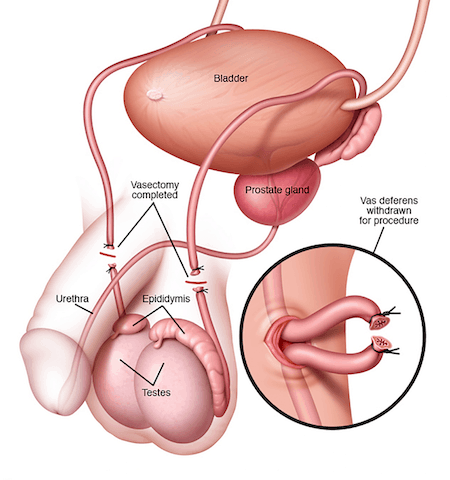
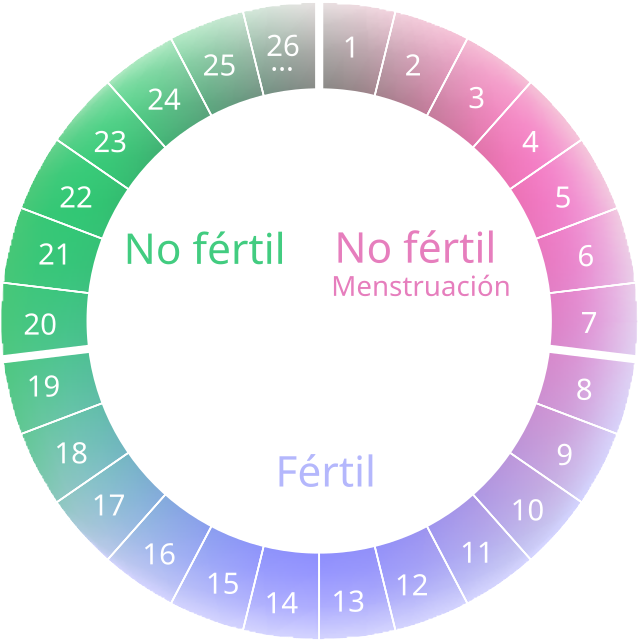
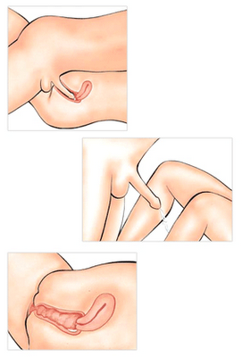

Preservativo (condón) |
Es el método más accesible, económico y utilizado.
Tiene una efectividad del 98% cuando se usa correctamente.
Previene embarazos y protege contra ITS como el VIH, la gonorrea, la sífilis y el virus del papiloma humano (VPH).
Se consigue en farmacias, supermercados y centros de salud, a menudo de forma gratuita en clínicas públicas.
Fácil de usar, sin efectos secundarios y disponible en diferentes texturas, tamaños y sabores. |
 |
Vasectomía |
Es un método permanente para quienes están seguros de no querer tener hijos en el futuro.
Es un procedimiento quirúrgico sencillo, seguro y con una rápida recuperación (1-2 días).
No afecta el rendimiento sexual ni la producción de hormonas.
Debe considerarse cuidadosamente, ya que es difícil de revertir.
Se realiza en clínicas u hospitales, y en algunos países es gratuito en sistemas de salud públicos. |
 |
Método del calendario (ritmo) |
Es un método natural que consiste en identificar los días fértiles del ciclo menstrual de la mujer para evitar tener relaciones sexuales durante ese período.
Requiere un conocimiento preciso del ciclo menstrual y un registro constante.
No es recomendable para mujeres con ciclos irregulares.
Su efectividad es limitada (alrededor del 76-88%), ya que los ciclos pueden variar debido a estrés, enfermedades u otros factores.
No protege contra ITS. |
 |
coito interrumpido (no recomendable) |
Consiste en retirar el pene de la vagina antes de la eyaculación.
Aunque algunos lo usan, no es un método confiable para prevenir embarazos ni ITS.
El líquido preseminal (que se libera antes de la eyaculación) puede contener espermatozoides, lo que aumenta el riesgo de embarazo.
No ofrece protección contra infecciones de transmisión sexual.
Su efectividad es muy baja (alrededor del 78%), ya que depende del control y la precisión del hombre. |
 |